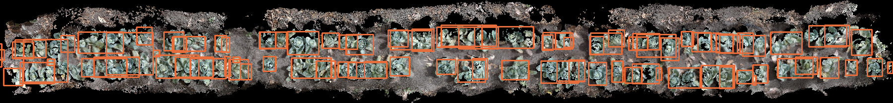

The goal is a single command that takes the name of a crop, finds the three
videos the AMIGA recorded for it, and returns an interactive 3D field with one
bounding box around every plant. You type cabbage, and a few
minutes later a browser page opens that you can orbit, zoom and inspect. Each
box carries the plant's position, its size, and how many frames it was seen in.
One fact about the footage dictates the whole design: the three cameras do not overlap. Two sit at ground level inside the canopy pointing roughly opposite ways, and the third looks straight down at the bed. A cabbage photographed from the side and the same cabbage photographed from directly above share almost no visual features, so the usual approach of fusing several simultaneous views of one scene has nothing to work with.
Depth therefore comes from motion rather than from stereo. Because the robot drives, each camera on its own becomes a sequence of viewpoints separated in time, which is enough to recover geometry. The overhead camera is reconstructed first, since it is the one that sees the field as a field.
Each choice below was made against a specific alternative, and the reason is usually a property of this footage rather than a general preference. The hardware constraint matters too: everything runs locally on an Apple M4 with 16 GB of shared memory and no NVIDIA GPU.
| Library | What it does | Why it, and not the alternative |
|---|---|---|
| VGGT | Takes a set of images and returns camera poses, depth maps and 3D point maps in one forward pass. | Chosen over DUSt3R and MASt3R, which compare images in pairs and then need a separate global alignment step to stitch those pairs together. VGGT solves a whole window of frames jointly, so that extra optimisation stage disappears. |
| PyTorch | Runs VGGT, using Apple's Metal backend to reach the M4's GPU. | Chosen over MLX, which is faster on Apple silicon but has no VGGT implementation. The VLM track does use MLX, so the two live in separate environments. |
| Ultralytics YOLOE | Finds crops in each frame from a text prompt such as "cabbage head", and returns a mask rather than a rectangle. | Chosen over stock YOLO, whose fixed 80-class list contains broccoli but neither cabbage nor peppers. Masks matter because a rectangle around a plant seen from above is mostly soil, and that soil would inflate the 3D box. |
| Open3D | Supplies the geometry operations: plane fitting, voxel downsampling, outlier removal and clustering. | Chosen over assembling trimesh, SciPy and scikit-learn, which together cover the same ground less tidily. It also had a working Python 3.13 build, which several alternatives did not. |
| Plotly | Renders the final interactive field as a single self-contained HTML file. | Chosen over OpenGL and Open3D's own viewer, both of which require the software installed locally to see anything. The HTML opens in any browser, works offline, and can be sent to someone who has none of this. |
| OpenCV | Decodes the video, measures frame-to-frame motion, and does the image processing behind keyframe choice and rig masking. | Chosen over PyAV or imageio because the same library also provides the optical flow and morphology those two stages depend on. |
Seven stages run in order, and each one writes its result to disk before the next begins. That means a re-run skips any work already done, which matters because one stage takes a quarter of an hour and the rest take seconds. The diagram shows how the data flows, and the notes below explain what each stage is actually for.
The robot drives in bursts, sitting still for long stretches and then moving quickly. Sampling at a fixed frame rate would waste effort on the stationary parts, where nothing new is visible, and skip through the fast parts, where the view changes most. This stage instead measures how far the image has actually shifted and keeps a frame each time that shift reaches a set amount.
The robot's rails, wheels and sibling cameras appear in every frame, and because they are bolted to the camera they never move relative to it. A reconstruction algorithm reads that as a stationary piece of the world while the field streams past, which corrupts the camera track. The fix comes from averaging hundreds of frames together: the field blurs into nothing while the hardware, identical in every frame, stays sharp and can be cut out.
VGGT can only hold about sixteen frames in memory at once, so a long clip is processed in overlapping windows. Each window comes back in its own coordinate system, and the frames shared between neighbouring windows provide the matching points needed to line them up. Chaining those alignments walks the entire clip into one coordinate system.
Every window alignment carries a tiny rotation error, and composing thirty-five of them bends the whole field into an arc. The reconstruction cannot know the bed is flat, but we do, so this stage walks along the row, measures where the soil actually sits, and subtracts that profile. It also replaces the arbitrary coordinate axes with the robot's real direction of travel, which is what finally separates the two crop rows.
Detection runs on the same keyframes and returns a mask for every plant it recognises from a text prompt. Lifting reads the reconstructed depth underneath each mask and converts those pixels into a 3D blob. Because one plant appears in dozens of consecutive frames, the blobs are then clustered so that each real plant ends up with exactly one box.

Open the interactive demo → (plant boxes only, 5 MB)
Open the version with the point cloud → (12 MB, slower to load)
Five buttons switch the camera between a top-down view, along the row, across the row, oblique, and ground level. The last two are worth dwelling on: the overhead camera never occupied those positions, so being able to look along the row from ground level is the reconstruction doing its job. Hovering any box reports the plant's identifier, its dimensions, and how many frames it was found in.
Measurements are consistent with each other but carry no real-world units, because reconstruction from a single moving camera recovers shape without scale. A single known distance, such as the overhead camera's height above the soil, would convert everything to centimetres. That is deliberately left as a one-line change rather than guessed at.
The most useful improvement is a better point cloud. At present every keyframe contributes its own depth estimate and those estimates are simply piled together, so the soil surface ends up almost as thick as the plants are tall. Fusing the depth maps into a single surface, rather than stacking them, would turn that haze into solid geometry and make every measurement taken from it more trustworthy.
Two further gains are within reach. Detection currently finds roughly sixty per cent of visible plants, and the misses are mostly in heavy occlusion where a model fine-tuned on hand-labelled frames would do better. Registering the two ground-level cameras into the same coordinate frame would then add the side profiles that an overhead view fundamentally cannot see, which is exactly where a plant's height and shape live.
The wider aim is harvestability. Knowing a cabbage's position and size is half of deciding whether it is ready; the other half is the ripeness judgement the VLM track is working toward, and the two are meant to meet. An AMIGA that can drive a row, build this field model, and mark which cabbages, broccoli heads and peppers are ready would turn a question farmers currently answer by walking the field into one answered by driving it.